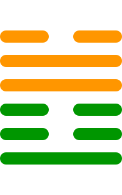

第十七卦
随卦

卦辞
元亨，利贞，无咎。
随卦象征着跟随、顺应与适应。卦辞意为：大亨通，有利于坚守正道，没有灾害。随卦教导我们要顺应时势，灵活变通，但要坚持正道。
彖传
随，刚来而下柔，动而说，随。大亨，贞无咎，而天下随时，随时之义大矣哉。
彖传说：随，刚健而来居下位，行动而喜悦，就是随。大亨通，坚守正道没有灾害，而天下随时而动，随时的意义很大啊。
象传
泽中有雷，随。君子以向晦入宴息。
象传说：泽中有雷，就是随卦。君子应当效法这种精神，向晚入内宴饮休息。泽中有雷，象征顺应时势，君子要适时休息。
爻辞
初九：官有渝，贞吉。出门交有功
官职有变动，坚守正道吉祥。出门交往有功绩。
初九爻位于最下方，适应变化。官职有所变动，能够适应变化坚守正道就会吉祥。出门与人交往会获得功绩。
六二：系小子，失丈夫
系住小人，失去丈夫。
六二爻得中得正，选择错误。如果只关注小事情，就会失去大机会，需要正确选择跟随的对象。
六三：系丈夫，失小子。随有求得，利居贞
系住丈夫，失去小子。跟随有求有得，利于安居守正。
六三爻位置得当，选择正确。关注重要事情，放弃小事情，跟随正道会有所得，有利于安居守正。
九四：随有获，贞凶。有孚在道，以明，何咎
跟随有收获，坚守正道凶险。有诚信在道中，以明察，有什么灾害。
九四爻接近君位，有所收获但需要谨慎。跟随虽然有收获，但过于执着会凶险。有诚信明察事理，就不会有灾害。
九五：孚于嘉，吉
诚信于美好，吉祥。
九五爻居中尊位，诚信美好。能够保持诚信，追求美好的事物，这样就会吉祥。
上六：拘系之，乃从维之。王用亨于西山
拘禁捆绑他，于是跟随维系他。君王用享于西山。
上六爻位于极点，需要约束。对过于放纵的人需要适当约束，君王在西山举行祭祀，表示归顺。